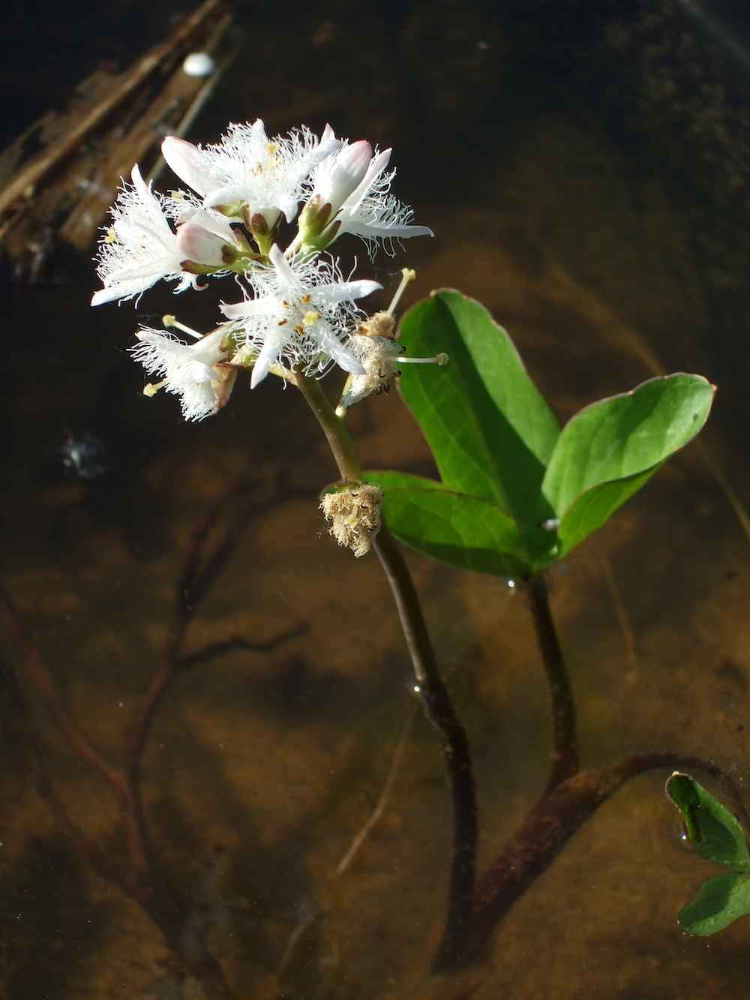

Eine Wasserpflanze mit Klee-Blättern und fransigen Blüten — ein Spezialist für nasse Standorte.


Klee, der gar keiner ist
Trotz des Namens „Fieberklee“ hat die Pflanze nichts mit den echten Klee-Arten zu tun. Sie gehört zu einer eigenen Familie (Menyanthaceae) mit nur wenigen Arten weltweit. Die dreigeteilten Blätter erinnern aber an Klee — daher der Name. Botanisch ist der Fieberklee viel näher mit Enzianen und Wegerichen verwandt als mit echten Klee-Arten.
Heilpflanze mit Bittermarken
„Fieber-Klee“ deutet auf die traditionelle Heilanwendung: gegen Fieber, aber vor allem als bitteres Magenmittel. Die Pflanze enthält intensive Bitterstoffe, die die Verdauung anregen. In der Schweiz wurde Fieberklee jahrhundertelang als Tonikum verwendet. Heute eher selten in der Volksmedizin, aber in der Naturheilkunde noch bekannt.
Wissenswertes & Merksätze
Erkennen leicht gemacht
Wasserpflanze in nassen Mooren, Sümpfen, Teichrändern. Blätter dreizählig (klee-artig, daher der Name), Blättchen länglich-oval, deutlich erhaben. Blüten weiß bis rosa, fünfteilig, mit auffällig fransig-zerfaserten Blütenrändern — wie kleine Bartwedel.
Geschützt und selten
Der Fieberklee ist in vielen Bundesländern als „gefährdet“ eingestuft. Pflücken verboten. Wo er noch wächst, ist meist ein wertvolles intaktes Moor- oder Sumpfgebiet.